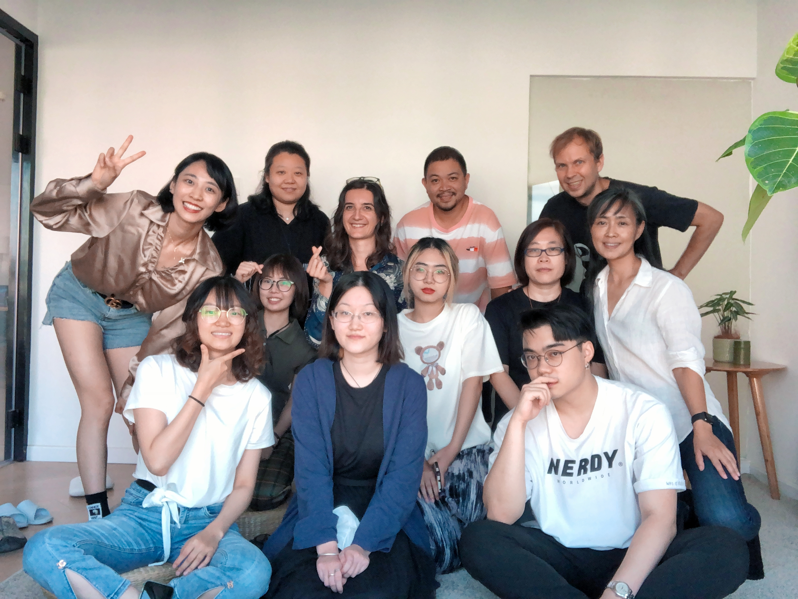
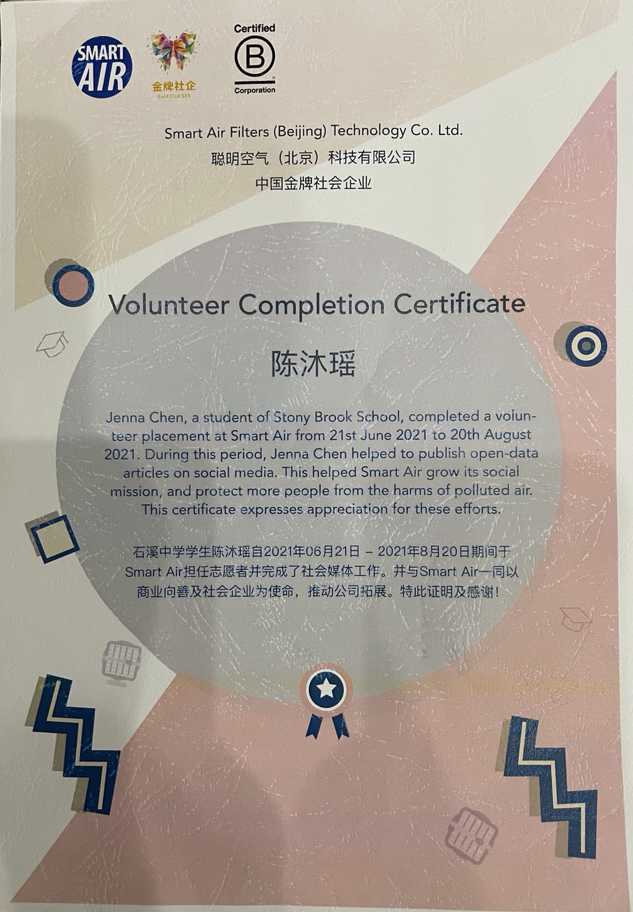
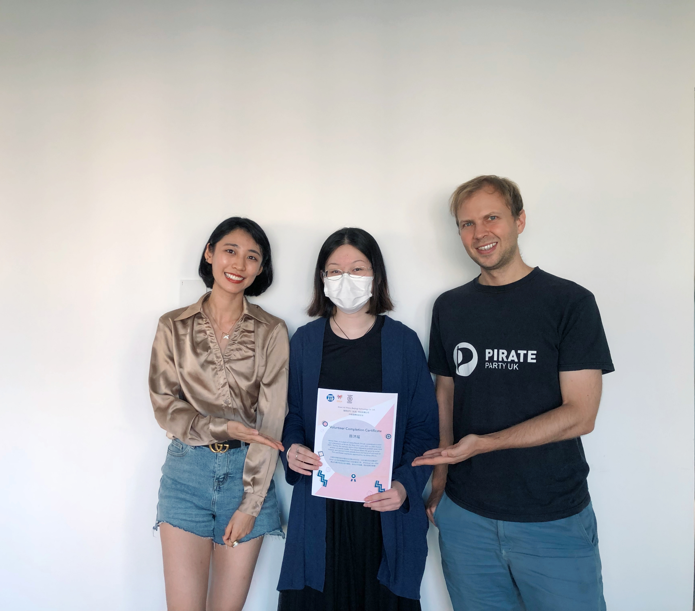

-SmartAir working experience-
I volunteered at SmartAir for two months during the summer. It is an American company with one of their offices located in Beijing aiming at spreading knowledge regarding how to protect oneself against air pollution. My job was to arrange their media accounts, post articles, edit videos, and translate articles. It is a particularly meaningful job for me because I have been affected by air pollution my whole life, and I always want to help people who suffer from the same problem. Here is one article that I helped Thomas published:
link to the page
I also made a video introducing the specifics of Smart Air:
This was the first time that I volunteered in an office, and I learned a lot from this experience. During the first few days, I was very confused about the multiple platforms that I have to go on to report my work and look up tasks. However, my manager Keer was very friendly and patient; she helped me adjust. Things became clear afterwards, and through this experience I got a chance to not only raise attention toward environmental problems by publishing environmental-related articles that thousands of people read everyday, but also to learn to work with adults, communicate, and cooperate with others, which are valuable skills I will carry for a very long time.
